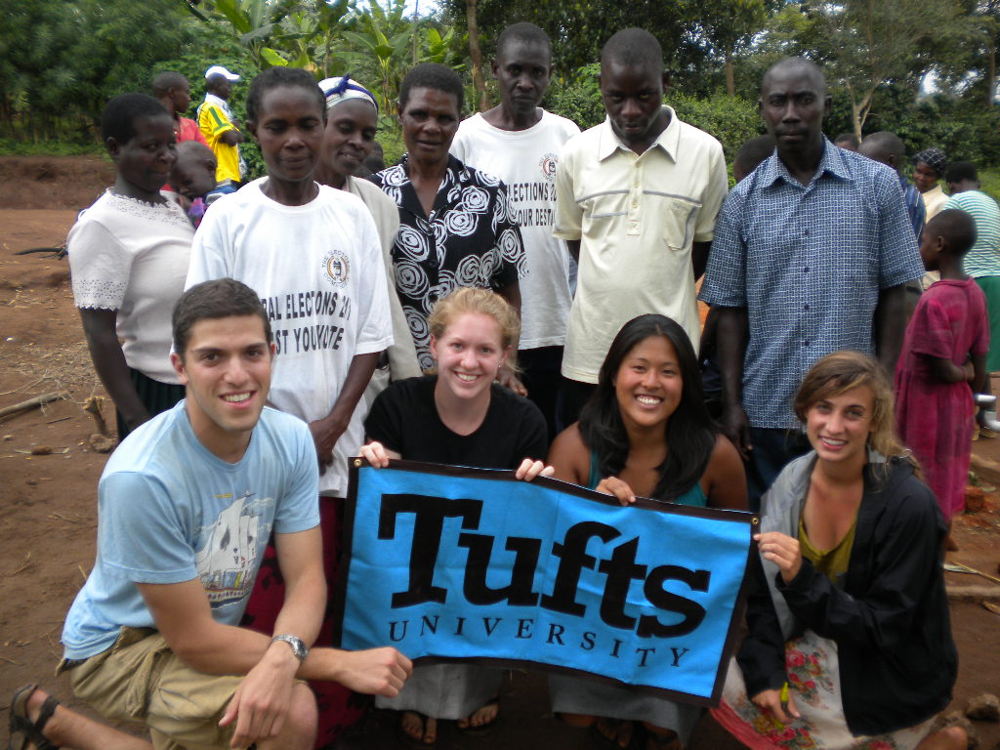
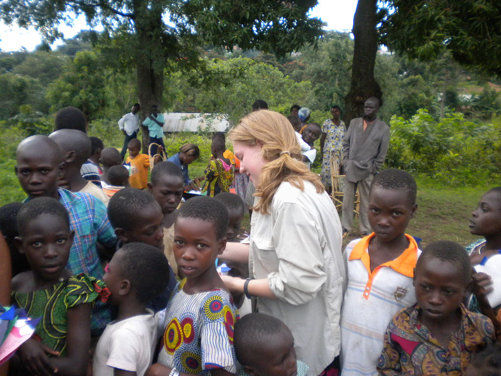
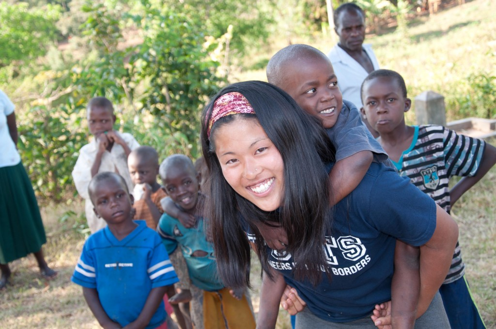

Erin Fleurant and Misaki Nozawa are co-presidents of the Tufts University chapter of Engineers Without Borders.

Erin Fleurant and Misaki Nozawa (left center and right center) in Uganda
Erin Fleurant
Class of 2013
Major: Child Development and Community Health, Pre-Med
When Lauryn Isford, a student intern for Epicenter, approached me to ask about my experiences leading the Tufts chapter of Engineers Without Borders (EWB), I couldn’t even think about where to begin. Would I start with myself as a freshman, fending off questions of why I was joining an engineering club as a liberal arts student? Would I talk about the experiences I had through a member of the executive board, rising quickly to Local Outreach Chair to represent Tufts – EWB? Or, would I talk about the amazing opportunities I had as a travel member to the Shilongo village outside of Mbale, Uganda? As the current co-president for the Tufts – EWB chapter, I can now reflect on the fact that there have been many amazing opportunities and pathways that led me to where I am now.
Tufts University has a unique blend of strengths as an academic center that contains a Liberal Arts College as well as a School of Engineering. As a freshman, I didn’t realize how important it was for these two schools to work together. However, during my first year as a member of Tufts – EWB, I realized how important my strengths in public health and child development were, and how crucial my participation was in this student-led group. My philosophy was, and still is, that any engineering or clean water project will not be completely successful (no matter how sophisticated and intelligent the system!) without community education and knowledge on the health of the surrounding community where implementation will occur. I soon realized that I would be contributing to the Tufts – EWB group as a liaison and tool to bridge social sciences with the engineering skills of other members of the group.

Erin with the community's children during a health education workshop
My leadership responsibilities and commitment to the group increased substantially last summer, as the travel team prepared to go to Uganda to implement a bicycle pump and storage tank for the village’s one clean water source. The community members had expressed their concerns that, especially during the dry season, wait time to access clean water could be as long as two hours. Members that lived far away would become discouraged and drink from sources that we knew were filled with E. coli and other bacteria.
In addition to the engineering design and calculations necessary for this task, the team also needed to prepare community health surveys and other education materials. As the only non-engineering student on the travel team, I was primarily responsible for overseeing the design and implementation of these surveys as well as creating a curriculum to educate community members. The community members had told us that children collected the water, therefore, our education efforts were aimed at this population. Through games, puppets, and even making a quilt, we overcame significant language barriers and successfully educated the children and community members about their new water system, clean water sources in their community, and future projects.
As current co-president of Tufts – EWB and in my future career in the health field, I am going to continue my work on integrating Liberal Arts and Engineering knowledge. I am confident that in whatever career I have in the future, the lessons I have learned in Tufts – EWB and in Uganda will follow me for the rest of my life.
Misaki Nozawa
Class of 2013
Major: Biomedical Engineering
There are 12 photographs from the Shilongo Village in Uganda that hang on my bedroom wall at school. These images are the first things that I see each morning when I wake up. Each print was hand-selected from the large number of pictures that I look during my stay in Uganda in 2011 and 2012, and these 12 photographs all bring back my favorite memories from my experience with the community of Shilongo. While they may seem like the typical photographs from an African village to most people, they represent all that I have learned from my experience with Engineers Without Borders and remind me of this amazing experience. Some aspects of my “amazing” experience are probably what you have heard before from anyone who has traveled to Africa for a service project; however, what made my time in Shilongo an unique and unforgettable experience were the challenges that we faced—the challenges that did not defeat me but inspire me today to pursue a long term commitment to working with people of developing countries.

Misaki Nozawa with children in Uganda
I have been involved in EWB since my very first semester at Tufts. When I arrived to Tufts, I did not waste a second before I threw myself right into the organization. At the time, this project in the Shilongo Village in Uganda was a brand-new opportunity that had just been started. Over the years, I feel as though I have grown with the Uganda program, and EWB has aided me to discover that working in the development field is one of my passions.
Since 2009, our EWB group has been working with the community of Shilongo to improve access to their source of clean water. We have spent numerous hours in Uganda working with leaders and community members of Shilongo to build our partnership and learn about their daily lives to access their needs. On a weekly basis, the EWB team back on campus toil away at the engineering side to design the system. Unfortunately, the implementation of our project did not go as well as we had hoped back in August 2011. Soon after construction, the system was taken down. While this was not what our group had hoped for, we have spent the past several months to determine what went wrong and how we could improve our thought process and execution of our ideas.
With every step of this project, we are getting a taste of what we will soon see in industry—different components of product development, effective communication, efficient methods of managing a project, etc. Along the way, we also experience valuable opportunities to work with our peers, professors, mentors, and other similar development organizations in the U.S. and abroad. While our first implementation experienced a setback, our group is determined to move forward to provide an alternate solution—and hopefully reap more success the second time around.
Our struggle has also illustrated to me the complexity of development work. I have experienced first-hand that one cannot hope to bring about positive change without having to climb over numerous unforeseen hurdles. The photographs that I wake up to every day are merely a small reminder of what an impact one can make—a source of my personal inspiration that motivates me to keep challenging myself.
The total of five weeks that I have been fortunate to have spent in Shilongo has also had an impact on what I see for myself in my professional future. After directly working with people of Shilongo, I am now more committed than ever to find an opportunity where my biomedical engineering background can help me to address some of the most pressing global health issues, especially those in developing countries.
Tufts Engineers Without Borders: sites.tufts.edu/ewb


{kind=link}
{kind=link}
{kind=link}